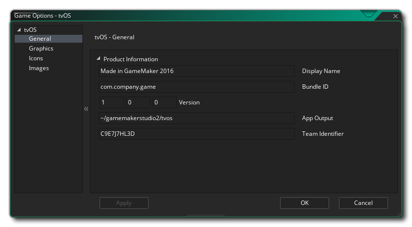
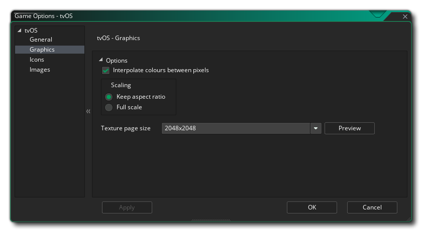
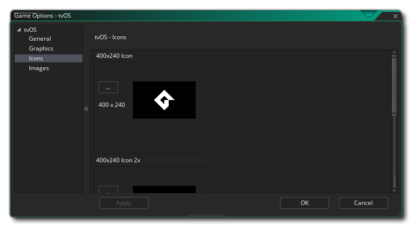

This section outlines the different options available to you that control how your tvOS game projects will be compiled. The different sections are:

Here you need to fill in the Product Information about your game, including its Display Name, its Bundle ID and the Version info. Note that the Bundle ID must be in the correct reverse URL format for the final build of the game to work correctly, EG: com.[Company].[GameName]. Here you also need to give the Team Identifier that you wish to use for signing the final application that GameMaker Studio 2 creates for you. Setting it here will override the Team ID that you have supplied in the tvOS Preferences.

Here you can change the following details related to how your game will be displayed, with the following options available:
- Interpolate colours between pixels: Turns on interpolation, which basically "smooths" pixels. for crisp pixel graphics, it should be off, but if you have nice alpha blends and smoothed edge graphics it is better left on. Default is off.
- Scaling: Here you can select to scale the draw canvas maintaining the aspect ratio within the device screen - adding "padding" around the edges to fit the screen - or you can select to have the draw canvas stretched stretch to fit.
Finally there is the option to set the size of the Texture Page. The default (and most compatible) size is 2048x2048, but you can choose from anywhere between 256x256 up to 8192x8192. There is also a button marked Preview which will generate the texture pages for this platform and then open a window so that you can see how they look. This can be very useful if you wish to see how the texture pages are structured and to prevent having texture pages larger (or smaller) than necessary.
NOTE: Be aware that the larger the size of the texture page, the less compatible your game will be.

This section permits you to add the various different icons required by the various devices and the different parts of the tvOS App Store. These icons should be authored as 24bit .png images at the size specified for each one.
It is worth noting that GameMaker Studio 2 has a Project Image Generator tool which can be used to automatically create all the Icons required for all the different target platforms your game is being compiled to. If you use this tool, you should revise the images created to ensure that they are what you require.

This section permits you to add separate graphics as splash screens (the image that will be shown briefly while your app loads) and as top-shelf static banners (dynamic content is not natively supported). All images must be authored as individual 24bit *.png images with no transparencies. For more information on the top-shelf, see the Apple documentation.
It is worth noting that GameMaker Studio 2 has a Project Image Generator tool which can be used to automatically create all the images required for all the different target platforms your game is being compiled to. If you use this tool, you should revise the images created to ensure that they are what you require.